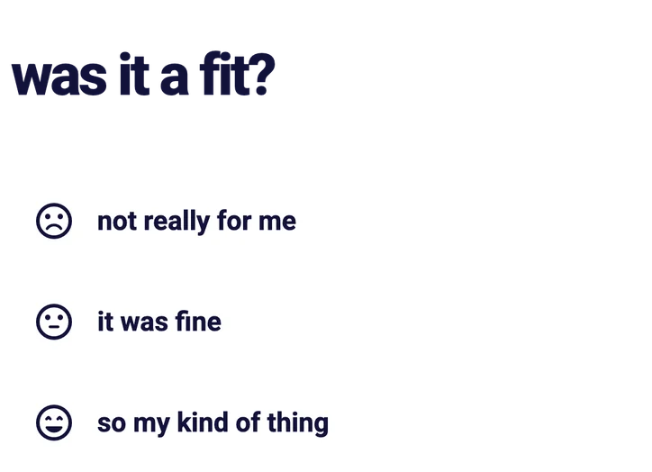
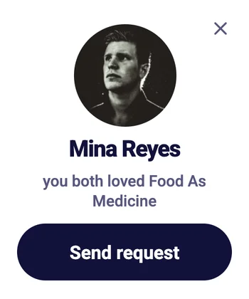
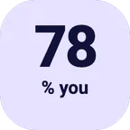
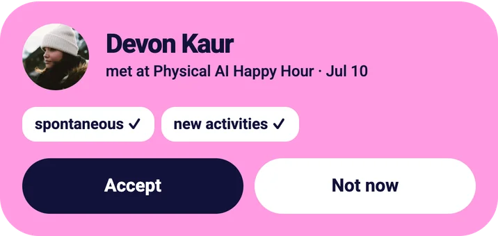
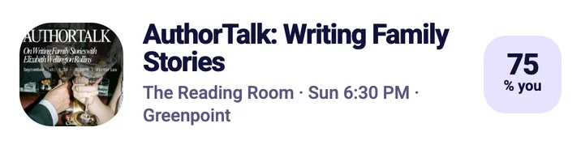
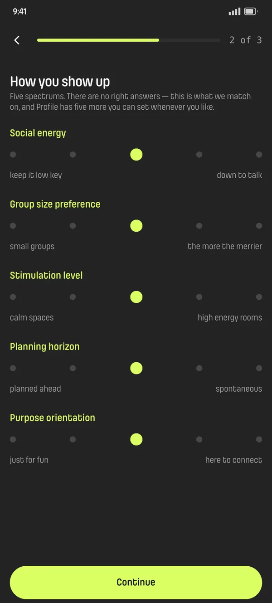
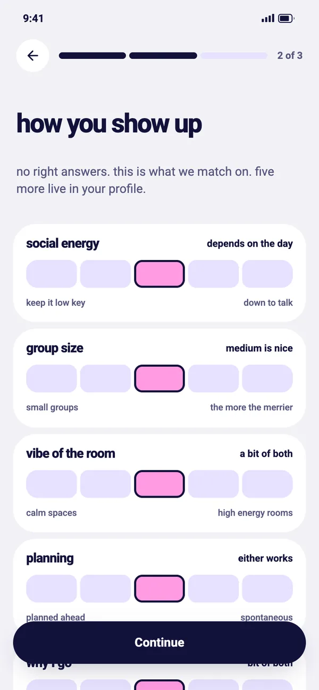
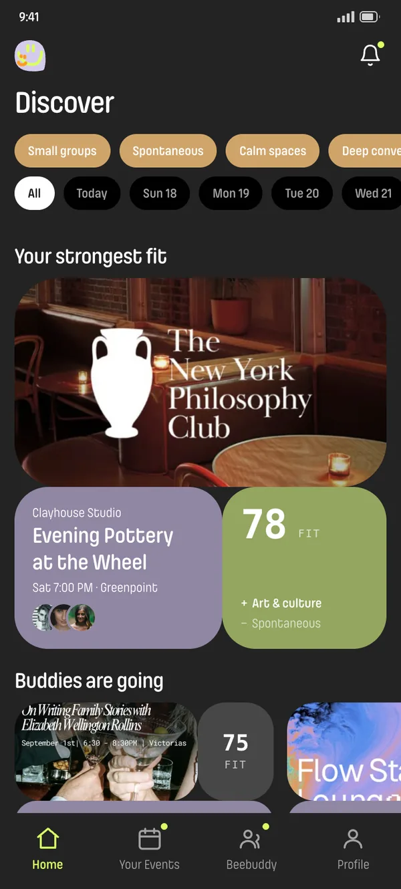
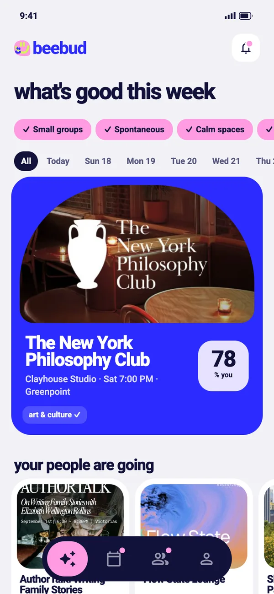

BeeBud
An event app that finds events where you'll feel comfortable, based on how you like to show up.
Overview
Summary
BeeBud is for people who often go to events alone. Every event gets a Fit Score based on how you like to show up, such as group size and the vibe of the room. I designed it solo: the information architecture, the UI and a clickable coded prototype I tested with five people on Maze.
Event apps match on interests or popularity, not on whether an event actually fits you. That matters most when you go alone.
Match on how you show up: social energy, group size, the vibe of the room, how you plan and why you go.
01 · Research
Every event app I studied personalizes on what you're into
I compared five apps: Meetup, Luma, Partiful, Fever and DayOfUs. Four of them rank on topics, categories or who your friends are. Meetup and Luma collect feedback after events, but there's no public sign it changes what you see next. Only DayOfUs matches on personality, and it plans every dinner itself. Nobody ranks events that independent hosts post by how people want to show up.
you like jazz and immersive art
you tend to have a better time at smaller, conversation-heavy gatherings than large ticketed spectacles
02 · Model
To rank on behavior, people and events both needed a behavioral profile
I brainstormed what makes two events with the same topic feel completely different: how big the group is, how loud the room gets, how deep the talk goes, whether there's a set program. That became ten dimensions.
- social energykeep it low keydown to talk
- social recoveryneed space between plansback to back is fine
- group sizesmall groupsthe more the merrier
- structurestructured programsgo with the flow
- vibe of the roomcalm spaceshigh energy rooms
- physical energysit and take it inup and moving
- planningplanned aheadspontaneous
- why I gojust for funhere to connect
- noveltytried and truenew activities
- conversationdeep conversationseasy small talk
People can describe themselves. Nobody fills in an event's profile by hand, so it starts as an AI guess from the title, description, category and venue, and attendee feedback corrects it over time. The hard part was trusting a brand-new event. With no feedback yet, its Fit Score leans on interest tags. As ratings come in, behavior takes over.
A repeat host's new event starts from the average of their past events. A first-time host has nothing to start from, a limit I left open.
I first split the dimensions into a fixed core and a mood layer for the day. While mapping Home, I dropped the split: every dimension has one default in Profile, and any of them can be switched off for tonight.
03 · Design: Home feed
Not feeling it tonight? Tap a tag off and every score updates
Your onboarding answers show up as tags at the top of Home. If tonight feels different, tap a tag off. My first idea was for the tap to only show more events. But those events kept their low scores for the preference you'd just turned off, so they still sank to the bottom. Now the tap does both: it shows more events and recalculates every Fit Score without that preference.
- Your profilehow you show up, tonight's tags
- Event profileinferred, refined by feedback
- Fit Scoreshown as "% you"
- Home feedranked by fit
04 · Design: Beebuddies
BeeBud finds people who enjoyed the same event. You make the first move
After an event, BeeBud asks how it went. The questions are about the event, never the people. When two people who went answer the same way, both get a suggestion to connect. My first idea was a match you just accept. But enjoying the same event doesn't mean someone wants to meet you, so a suggestion only has one button: Send request. If they accept, you become Beebuddies and can see each other's social links.
- Post-event feedbacktwo people, same event
- Answers alignboth rated it positively
- Suggestiona prompt, not a match
- Requestsent by hand
- Beebuddyboth accepted
05 · Structure
Four tabs
I mapped the app in four sessions, one per tab. A notifications tab would only repeat what lives elsewhere, so a bell and badge dots send you to where the action is.
06 · Testing
Testers understood the Fit Score, but half of them didn't notice it
I tested the coded prototype with five people on Maze. All four who answered said the number meant how well an event matched them, but two hadn't seen it at first. Onboarding scored 3 out of 5 from tedious to worth it, and one person couldn't find a tag for a loud night out. What I changed:
removing a bit of the sliders… it did feel a little tedious at times
Onboarding asks five sliders now instead of ten. The other five wait in Profile.
i was looking for a genre for loud or party at the top of the screen but didn't seem to find it
I renamed the labels in everyday words. "Stimulation level" is now "vibe of the room".
oh! i didn't see that! maybe it can be more obvious?
I made the Fit Score bigger on every card and labeled it "% you".
clicking to the beebuddies part was kind of confusing
Suggestions got their own section, so they don't look like requests waiting on you.
My own call: the dark palette felt too poppy and contrasty.
I switched the app to light mode.




Where it stands
BeeBud is a clickable prototype, and its privacy rules still need a screen
The prototype is live at beebud.vercel.app. Asked if they'd use it instead of how they find events now, testers averaged 4 out of 5. But only one of four knew that people from the same event can see your profile, and nothing on screen teaches that yet.
Testing caught what planning missed. I designed the Fit Score as the core of the app, and 2 of 4 testers never noticed it.
Recruit more people. I planned for 25 to 30 and got five, too few for the pass and fail thresholds I set in advance.